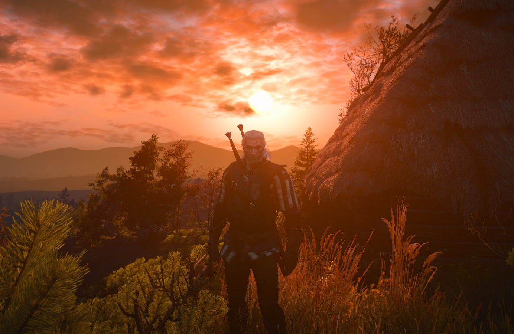

Profile Page
Hello World!
I'm Gabriela Panayotova, I'm currently 19 and an ICT student at HZ University of Applied Sciences.
I'm from Varna, a beautiful coastal city on the Black Sea in northeastern Bulgaria and it's "Sea capital", known for its rich history and cultural significance. There I studied at Varna Trade High School "Georgi S. Rakovski" with a specialisation in Economics and Management.
My characteristics
- I am very stubborn and determined to achieve my goals!
- I am patient and I am always there for help and support!
- I am always open to new ideas and points of views!
My hobbies
I always love trying out new ones whenever I can, but here are my main ones:
- Playing video games
- Playing table top games
- Crocheting
- Reading
- Drawing
- Watching Fantasy or Period drama movies & series
- Taking photos of every single thing I find pretty
The genres of video games I'm into the most are RPGs and Decision-based games. Some of my favourite games are The Witcher 3, World of Warcraft, Warhammer 40k: Gladius, Skyrim, The Elder Scrolls Online, all of the Dark Souls games + Bloodborne and Elden Ring, Dragon Age: Inquisition and so many more! I like playing competitive games too but mostly for fun and if I'm with friends.
I have been interested in TTRPGs since 8th grade and this year I finally got to play the one I have always wanted to - Dungeons & Dragons and it's been so much fun.
I'm still a beginner at it but it's such a fun and relaxing hobby. I started it because I wanted to make cute gifts for my loved ones and also to lessen my screentime, which has really worked so far! I like multitasking so I always put on something to watch while I crochet.

My favourite book genres are, of course, medieval fantasy and also light classical novels, for example Jane Austen's or the Bronte sisters'.
I used to draw more often as a little kid but now I mostly do cards if it's someone's birthday or a holiday.
Always rewatching LOTR, Hobbit, Bridgerton, Pride and Prejudice or Studio Ghibli movies.